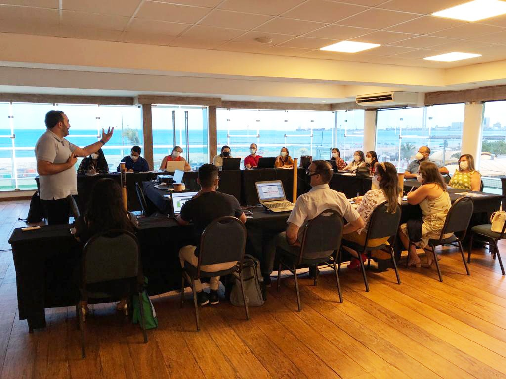
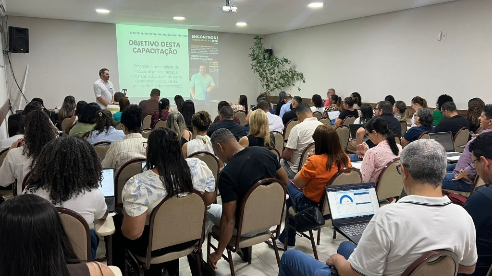

Ao lado de quem faz a gestão pública acontecer.
Consultoria, assessoria, treinamentos e sistemas próprios para secretarias de educação, saúde e gestão municipal. Planejamos com o gestor, capacitamos a equipe e acompanhamos a execução até a prestação de contas.



Captar recurso é só uma parte. O SIGEMEC planeja, capacita a equipe, implanta sistema e acompanha a gestão até a conta fechar.
Diagnóstico e plano
Levantamos a situação do município nos sistemas federais e definimos, com o gestor, o que fazer e em que ordem.
Equipe preparada
Encontros técnicos e cursos in company para quem opera PAR, SIGPC, PDDE e conselhos no dia a dia.
Tudo num só lugar
Gestão e Controle, Gestão Escolar e Saúde: prazos, programas e indicadores organizados, com suporte técnico.
Do projeto ao repasse
Apoio no cadastro de projetos, na execução dos programas e na prestação de contas aos órgãos federais.
Áreas de atuação
Quatro frentes, uma só equipe. O município contrata o que precisa e soma as outras quando quiser.
Consultoria, Assessoria e Treinamentos
Orientação técnica para as secretarias nos sistemas do MEC e do FNDE, com capacitação de técnicos, diretores e conselheiros.
Saiba maisSIGEMEC Gestão e Controle
Sistema de gestão, monitoramento e controle: planejamento de ações, execução de programas e prestação de contas, com orientações em tempo real.
Saiba maisSIGEMEC Gestão Escolar
Secretaria e escolas integradas: matrículas, diário, transporte, merenda e aplicativos para professores, alunos e responsáveis.
Saiba maisSIGEMEC Saúde
Apoio técnico e estratégico para secretarias de saúde: indicadores, conformidade, planejamento e capacitação das equipes.
Saiba maisComo trabalhamos
Quatro passos. O município sempre sabe em que ponto está e qual é o próximo.
- 1
Diagnóstico
Situação do município nos sistemas federais: pendências, prazos e oportunidades.
- 2
Plano e implantação
Escopo definido com o gestor, sistema configurado e equipe apresentada.
- 3
Capacitação e acompanhamento
Equipe treinada, orientações técnicas e suporte no dia a dia.
- 4
Prestação de contas
Execução acompanhada e contas enviadas no prazo, com relatórios para decisão.

Eder Carlos Dalberto
Especialista em programas federais e bacharel em Direito, fundou a Dalberto Consultoria e Assessoria em 2016 e criou o SIGEMEC a partir do trabalho de campo com secretarias municipais. É ele quem conduz os encontros técnicos e acompanha de perto os municípios atendidos.
ISTOÉLeia a matéria Abrir no YouTube
Gestão Educacional Municipal 2026
Encontro técnico presencial com Eder Carlos Dalberto e equipe: Fundeb e Tempo Integral, SIGPC Ágil, CACS-Fundeb e CAE.
Quem trabalha com a gente
Secretárias, dirigentes e técnicos municipais atendidos pelo SIGEMEC.
Todas as ações que estavam paradas foram regularizadas e, hoje, o município recebe integralmente os recursos destinados pelo governo federal.
Conseguimos regularizar várias pendências dentro do SIMEC, o que trouxe recursos que nos permitiram qualificar a nossa educação municipal.
Abriu horizontes para coisas em que estávamos totalmente perdidos. A equipe, sempre atenciosa, nos dá segurança.
Capacitação excelente e eficaz. A forma de condução foi muito otimizada. Foi maravilhoso… Parabéns!
Ele é muito didático, paciente, franco, direto… responde a todas as perguntas, sem exceção. Tenho certeza que agora iremos trabalhar com mais segurança!
Uma formação como essa deveria contar com a participação de toda a equipe da prefeitura: secretário, conselheiros, contador, equipes das secretarias e até mesmo o prefeito.
Para ficar em dia
Mudanças em programas, políticas e compras públicas, em leituras de 3 a 5 minutos.
Sem abrir licitação própria
A prefeitura pode contratar o SIGEMEC por adesão a ata de registro de preço. Peça o orçamento e a equipe envia a documentação.
- Adesão a ata de registro de preço vigente
- Proposta conforme as áreas que o município precisa
- Portal Melhores Fornecedores do Brasil para pesquisa de mercado
Vamos olhar o seu município?
Conte o que a sua secretaria precisa. A equipe responde em até um dia útil, sem compromisso.
- Consultoria e assessoria
- Treinamento da equipe
- Demonstração dos sistemas
- Pré-diagnóstico gratuito